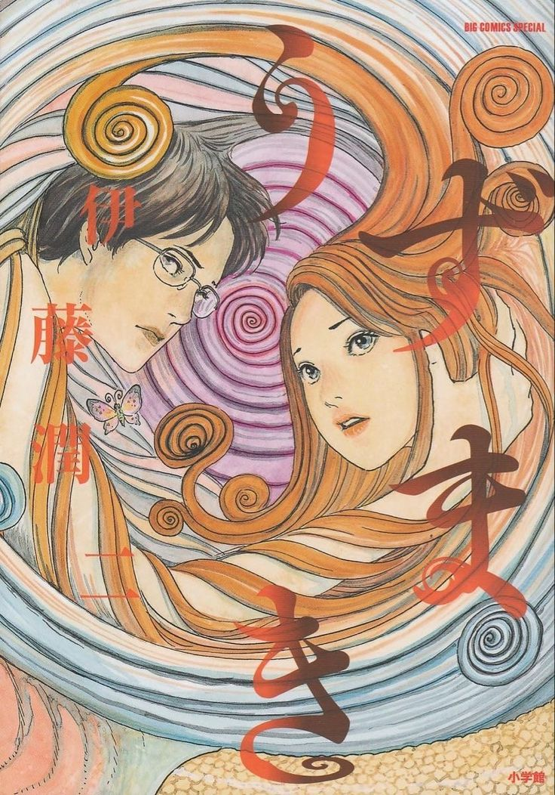
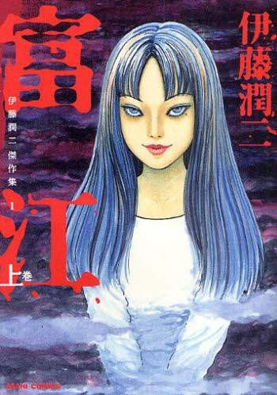
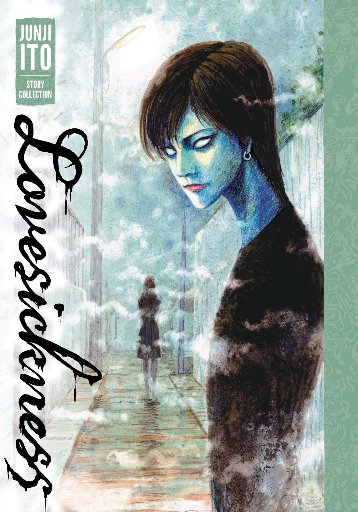

Uzumaki (うずまき, traducido como Espiral) es una de las obras más reconocidas del manga de terror cósmico y corporal, escrita e ilustrada por el legendario autor Junji Ito. Publicada originalmente entre 1998 y 1999, la historia sigue a Kirie Goshima y su pueblo natal, Kurouzu-cho, donde sus habitantes comienzan a ser consumidos por una extraña obsesión con las espirales, desencadenando una serie de fenómenos sobrenaturales y perturbadores.

Tomie (富江) es una de las obras más reconocidas del manga de terror psicológico y corporal, escrita e ilustrada por el legendario autor Junji Ito. Publicada originalmente entre 1987 y 2000, la historia sigue a Tomie Kawakami, una joven misteriosa y sobrenatural que posee la capacidad de regenerarse y llevar a quienes la rodean a la obsesión, la locura y la violencia.

Lovesickness (死びとの恋わずらい, Shibito no Koibō, traducido como Enfermedad de los muertos de amor) es un manga de terror psicológico escrito e ilustrado por el legendario autor Junji Ito. Publicado originalmente entre 1996 y 1997, la historia sigue a Ryusuke, un joven que regresa a su ciudad natal, donde un misterioso ritual de adivinación en los cruces de caminos comienza a provocar una serie de extrañas muertes y obsesiones.